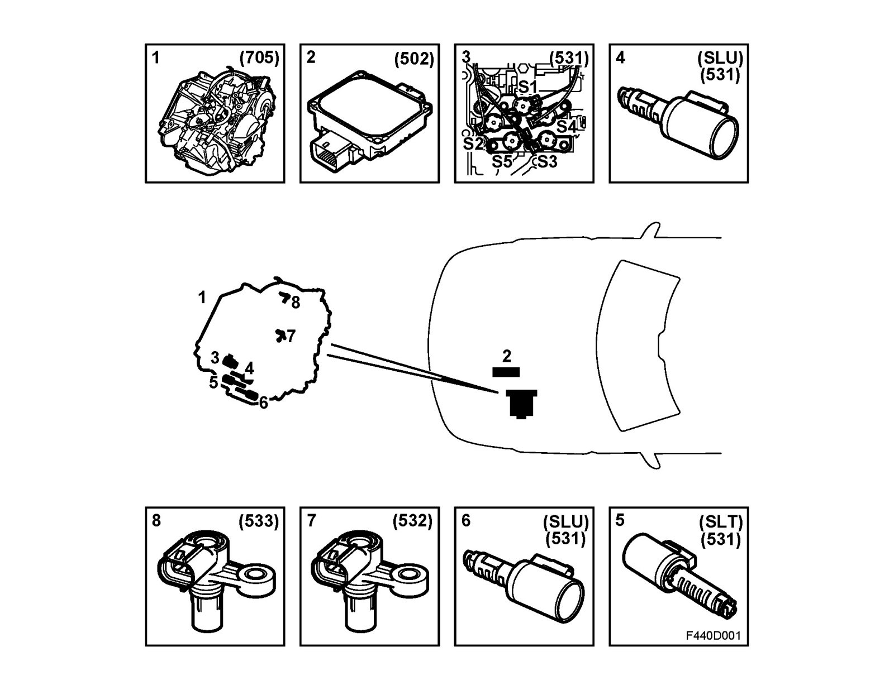
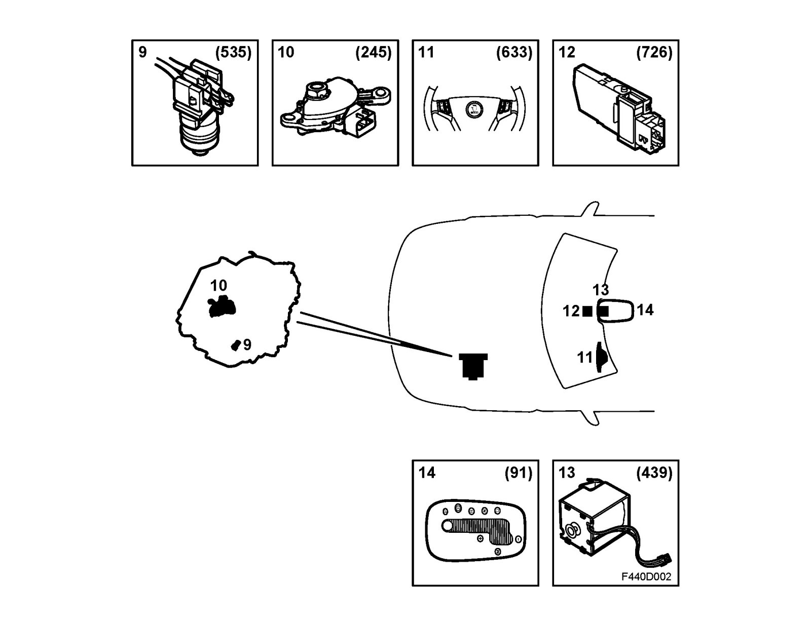

Principal Components
Principal componentsThe automatic transmission consists of the following principal components:


1. Transmission FA 57
2. Control module, TCM (502)
3. Shift solenoid, S1-S5 (531)
4. Oil pressure solenoid, SLU (531)
5. System pressure solenoid, SLT (531)
6. Oil pressure solenoid, SLS (531)
7. Speed sensor, input shaft, transmission casing (532)
8. Speed sensor, output shaft, transmission casing (533)
9. Transmission fluid temperature sensor (535)
10. Transmission range switch, automatic (245)
11. Switch unit, steering wheel (633)
12. Gear selector control module (726)
13. Solenoid, gear selector, SHIFT LOCK (439)
14. Lamp, selector lever position indicator illumination (91)